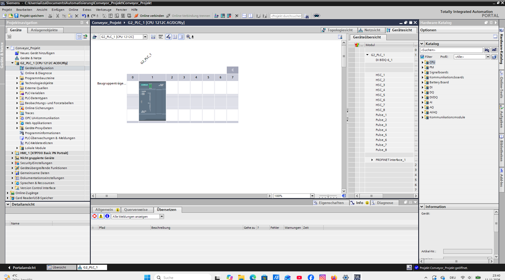
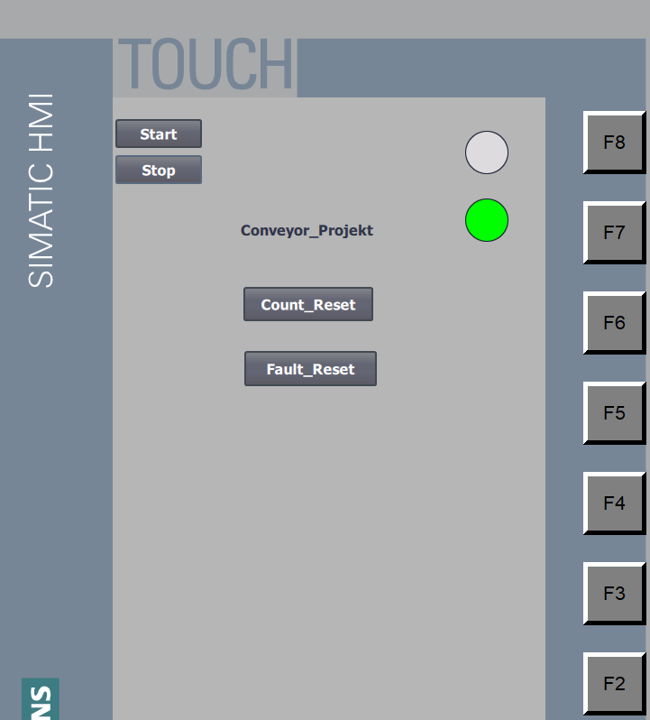
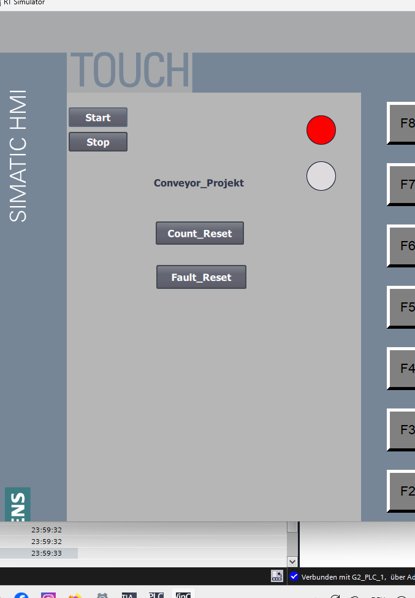
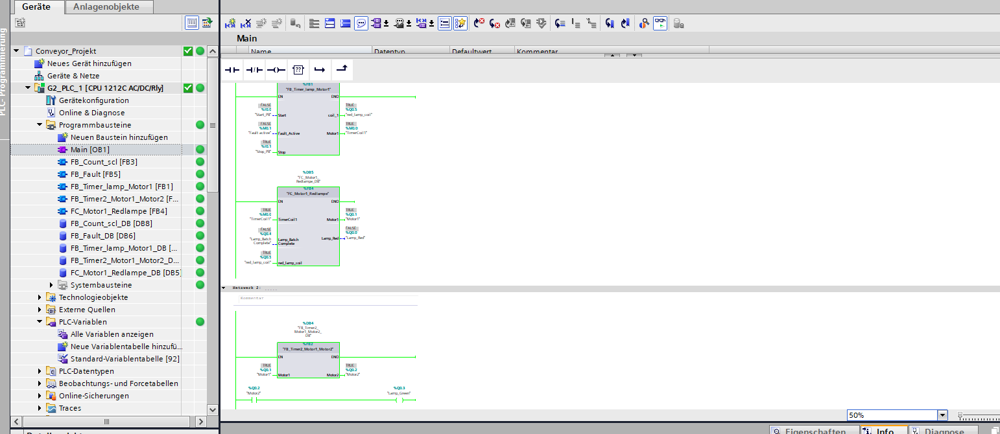

1. Projektbeschreibung
Ziel dieses Projekts ist die Entwicklung und Simulation einer SPS-gesteuerten Förderanlage mit zwei Motoren und zwei Sensoren.
Die Steuerung wurde mit Siemens TIA Portal V21 entwickelt. Zur Bedienung und Überwachung wird eine HMI-Oberfläche verwendet.
2. Verwendete Technologien
SPS
Siemens SIMATIC S7-1200 CPU 1212C AC/DC/Rly
HMI
SIMATIC KTP700 Basic PN mit Bedienoberfläche
Programmierung
KOP / Ladder Logic OB, FC, FB und DB
Simulation
S7-PLCSIM und HMI Runtime
3. Implementierte Funktionen
- Start- und Stoppsteuerung
- Ansteuerung von zwei Motoren
- Auswertung von zwei Sensoren
- Zeitverzögerungen von 3 und 2 Sekunden
- Stückzählung bis zum Zählwert 5
- Reset-Funktionen
- Fehlerbehandlung
- HMI-Bedienung und Statusanzeige
4. Programmstruktur
Das SPS-Programm ist in mehrere Programmbausteine strukturiert. Hierzu gehören der Organisationsbaustein OB1, Funktionsbausteine (FB), Funktionen (FC) und Datenbausteine (DB).
5. Projektbilder
Originalaufnahmen aus Siemens TIA Portal V21 und der HMI-Simulation. Bilder anklicken, um sie zu vergrößern.
1. Hardwarekonfiguration

Hardwarekonfiguration einer SIMATIC S7-1200 CPU 1212C in Siemens TIA Portal V21.
2. HMI – Betriebsanzeige

HMI-Bedienoberfläche mit Start, Stop, Reset und grüner Statusanzeige.
3. HMI – Statusanzeige

Darstellung eines weiteren Anlagenzustands mit roter Statusleuchte.
4. SPS-Programmstruktur

Struktur des SPS-Programms mit OB1, Funktionsbausteinen, Funktionen und Datenbausteinen.
6. Simulationsvideo
PLC Simulation Demonstration
Demonstration der Steuerungsfunktionen und Signalzustände während der Simulation.
Das Simulationsvideo wird hier ergänzt.
7. Projektdateien
TIA Portal Projekt
Das Projektarchiv und die technische Dokumentation werden zum Herunterladen bereitgestellt.
Projektdateien folgen.